Fall 2008 Photos
Disneyland ResortSanta Monica PierSix Flags Magic Mountain
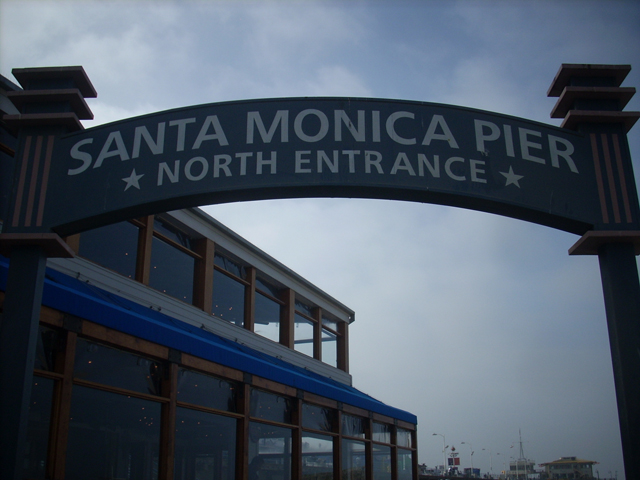
The Santa Monica Pier. It was supposed to be stop #2 on Fall 2008 Photos. However, we never got inside the damn place. If you're wondering why, read the update. It will tell the whole story.
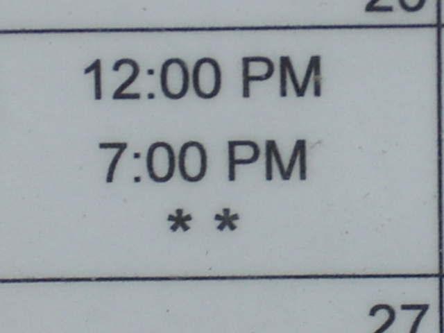
So we arrive at the Santa monica Pier at 11:00, but then we see this and realized the stupid website lied and that it actually opened at 12:00
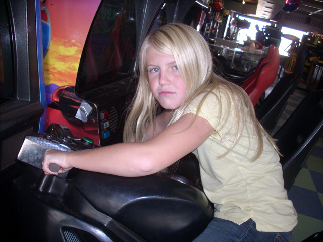
So Celeste and I hung out in the arcade for a little bit.
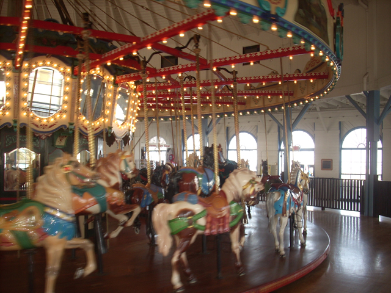
Well, at 11:30, we realized that the Santa Monica Pier's carousel opened at 11:00 and so we rode that.
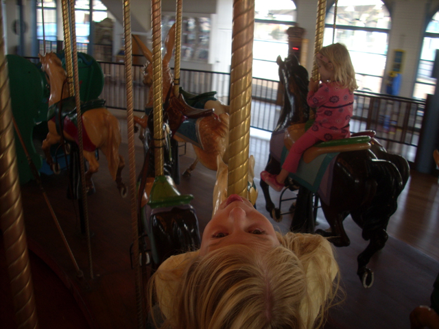
It may be just a carousel, but I am just happy that this freaking place has a ride open. (Oh yes, on a random sidenote, I must apologize to the Santa Monica Pier Carousel Ride Operator for accusing her of being an Evil Ride Operator. The Millenium Force & Steel Force Ride Operators have showed me what truely evil ride operators are like.)
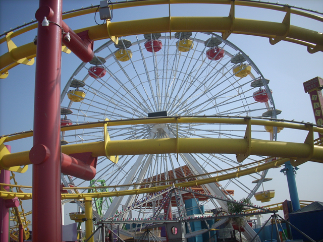
Well, we knew that since it would be another 30 minutes since the park would open, we decided to walk around and check the place out.
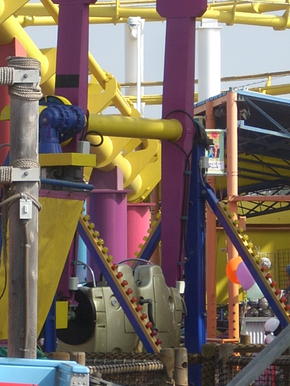
One thing I did notice when walking around the Santa Monica Pier was that they got a new ride. It appeared to be a Top Spin, except it could only hold 2 people. Just what the Santa Monica Pier needs. Another low capacity attraction. (Although to be honest, I was actually looking foreward to riding that thing.)
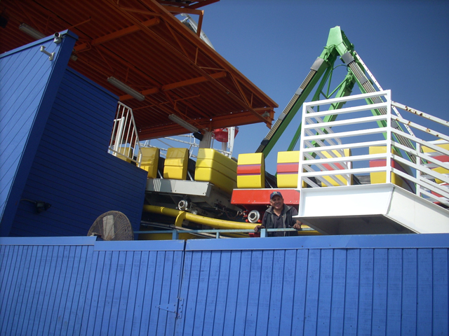
When walking by Westcoaster, the ride appeared to be broken as it was stuck right outside the freaking station!
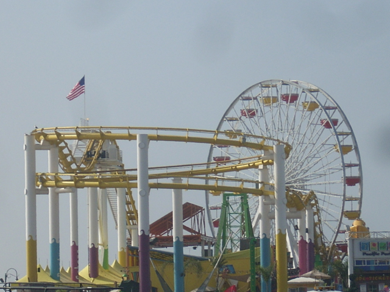
At this point, we see that it is 12:30 and the park is STILL NOT OPEN!!! So at this point, we asked an employee "Why the hell is the park still closed?" The employee said that the Ferris Wheel would be open at 2:00, and all the other rides were closed for the day. At this point, I was enraged. I had always hated the Santa Monica Pier and thought it was total crap, but when the fu*king park can't meet it's already low expectations as the fu*king park couldn't even open today! I always thought the park was sh*tty, but GOD DAMN!!!! I hope to never return to this sh*thole ever again in my fu*king life!!! To view my past rants on the Santa Monica Pier, click here.
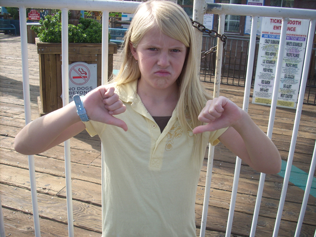
"I FU*KING HATE THE SANTA MONICA PIER!!!!!"
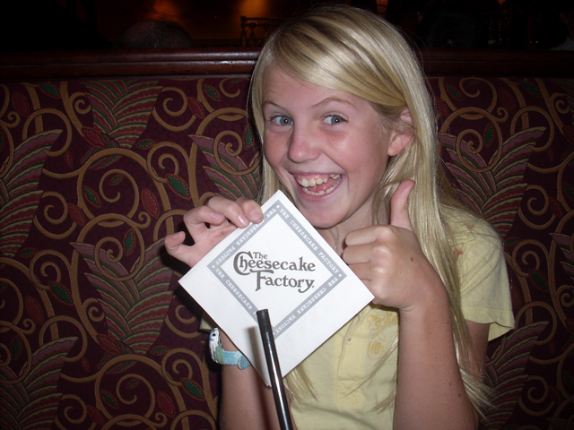
I'd much rather spend my time and money at the Cheesecake Factory!
Six Flags Magic Mountain
Home